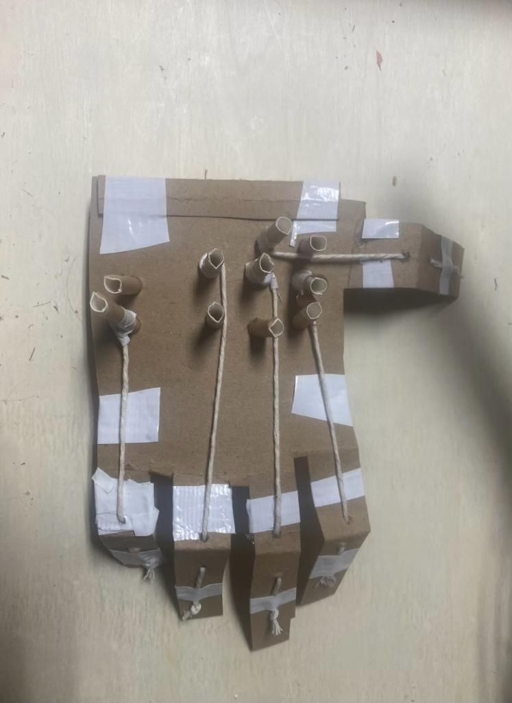

In a significant step forward in prosthetic technology, a team led by an ML Algorithm Specialist embarked on the Prosthetic Hand project, aiming to design and construct a functional prototype enhanced by machine learning. The project unfolded through several key stages:
The project began with the conceptualization of a prosthetic hand capable of basic movements, like grasping. The team, using servos, Arduinos, and resources from the Frith lab, built an initial cardboard model. This model employed strings and cardboard straws to simulate finger mechanics, controlled by servo motors, laying the foundation for more complex designs.
A critical step in the project was incorporating machine learning algorithms to analyze hand movement patterns. The team collected movement data through sensors on a glove worn by users. This data was then used to train a machine learning model to replicate natural hand motions, significantly improving the prototype’s grasping and holding capabilities.
The team transitioned their design into a CAD model using Solidworks. This stage involved exploring various manufacturing methods, including CNC machining, at the Frith lab to create more realistic components, particularly for the palm of the hand.
Next, the team utilized 3D printing and resin molding techniques to produce the palm and joint components. This process improved both the aesthetic and functional aspects of the prosthetic hand, making it more lifelike and durable.

In the final prototype, the Arduino was replaced with a DC power supply to improve control functionality. Lighter materials like wood were chosen for their practicality. The finger joints were directly attached to the servos, simplifying the control system. The hand's movements were regulated by three potentiometers, allowing for more precise and varied control of the finger joints.
The integration of the machine learning model into the prosthetic hand’s control system was a crucial development. This allowed the hand to adapt to different shapes and sizes of objects, significantly enhancing its functionality. The adaptive control mechanism enabled the hand to learn and improve its grasping techniques over time, based on user interactions.
In conclusion, the Prosthetic Hand project successfully bridged the gap between mechanical design and advanced technology. The integration of machine learning into the prosthetic hand prototype not only improved its functionality but also demonstrated the potential of AI in developing adaptive and responsive technological solutions. This project contributed significantly to advancements in the field of prosthetics, offering new possibilities for enhancing the quality of life for amputees.